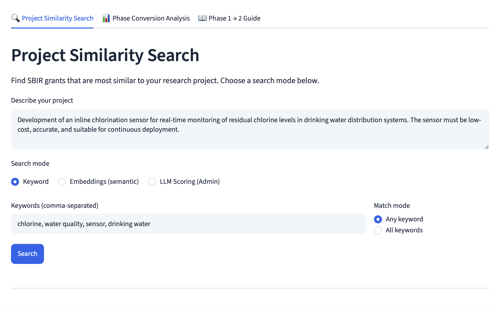
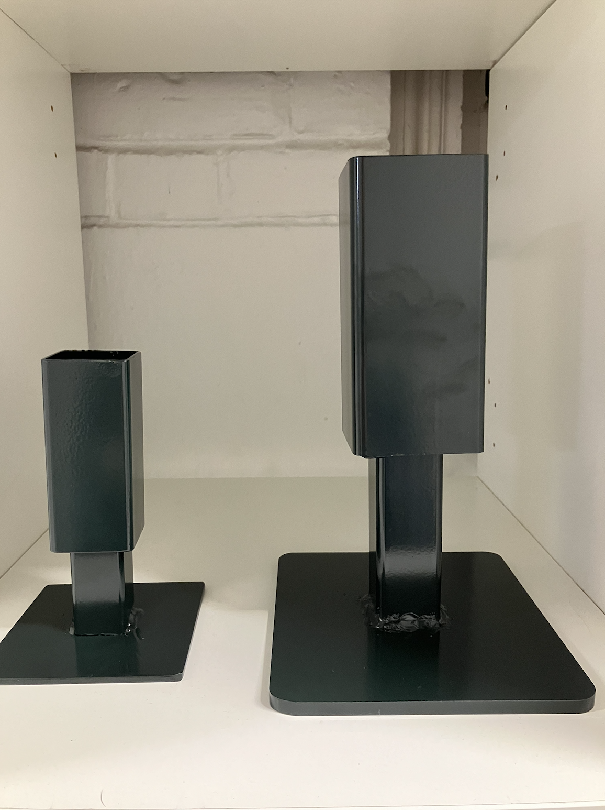
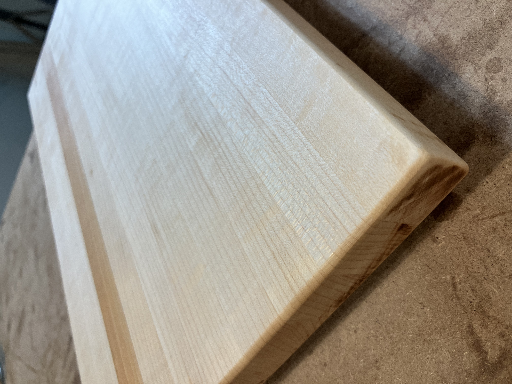
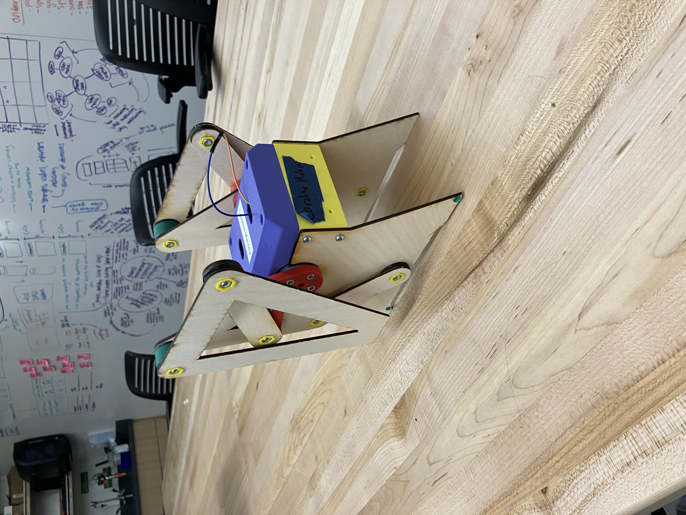

SBIR Grant Analyzer
Built as part of my work for the Market Shaping Accelerator to identify grant projects similar to MSA work and understand what percent of projects move from phase 1 to phase 2.

Built as part of my work for the Market Shaping Accelerator to identify grant projects similar to MSA work and understand what percent of projects move from phase 1 to phase 2.

Learned the basics, made this pair of lamps. British green powder-coated! Wiring TK. Excuse my grubby fingerprints.

Classic first woodworking project. Nice gift for my mom!

Kinematic walking "dinosaur." Class project, learned CAD, had a bunch of fun. Important technical detail: In the final version I gave it a stegosaurus head, sunglasses, and a top hat. See image gallery for details.
